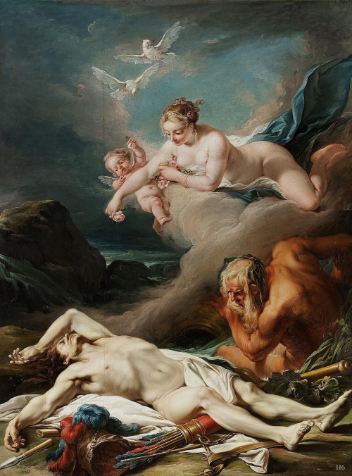

Các vị thần Olympe đều nhìn thấy hành động trả thù rất man rợ của Achille. Các thần đều thương xót cho số phận bất hạnh của người anh hùng đã anh dũng chiến đấu bảo vệ thành Troie. Mọi người đều muốn tìm cách giúp đỡ. Các thần liền bàn với vị thần Hermès-Người Truyền lệnh không thể chê trách được, mau xuống trần đánh cắp thi hài Hector để trả lại cho gia đình chàng, nhưng có ba vị thần nhất quyết chống lại ý định tốt đẹp đó. Đó là nữ thần Héra, người vợ có cánh tay trắng muốt của Zeus; Athéna, người con gái của Zeus; và Poséidon, vị thần Đại dương có cây đinh ba vàng gây bão tố. Vì lẽ đó mà đã mười một ngày trời kể từ ngày Hector tử trận, thi hài người anh hùng vẫn bị Achille hành hạ. Đến ngày thứ mười hai thì thần Apollon không thể chịu đựng được nữa. Thần chê trách các thần linh là đồ vô ơn bạc nghĩa, độc ác, tàn nhẫn, đã can tội phụ họa với hành động vô liêm sỉ và bạo ngược của Achille. Nữ thần Héra nghe Apollon kết án, bèn nổi nóng, phản bác lại, thậm chí còn mắng nhiếc Apollon thậm tệ. Nghe vợ nổi nóng ăn nói chẳng có lý có lẽ gì, thần Zeus thấy cần phải ra tay phân xử. Thần nói:
- Chúng ta nên từ bỏ ý định lấy trộm thi hài Hector đi. Việc đó không thể nào thoát khỏi con mắt của Achille đâu. Vì hắn lúc nào cũng được mẹ hắn ngày đêm săn sóc giúp đỡ, nhưng giá bây giờ một vị nào ở đây đi triệu nữ thần Biển-Thétis về ngay đây cho ta thì tốt hơn cả. Ta sẽ nói cho nàng rõ điều hay lẽ phải để nàng bảo Achille con nàng từ bỏ ngay cái lòng căm thù man rợ, nhận lễ vật của lão vương Priam và trả thi hài người con xấu số cho lão để lão làm lễ hỏa táng.
Zeus nói thế và nữ thần Cầu vồng-Iris bay nhanh hơn gió thổi liền phụng mệnh đứng dậy ra đi. Chẳng mấy chốc nữ thần Thétis đã có mặt trên đỉnh Olympe, ngồi bên cạnh đấng phụ vương Zeus. Nữ thần Biển-Thétis liền xuống ngay hạ giới đến doanh trại của quân Hy Lạp, gặp đứa con trai yêu quý của mình truyền lại chỉ lệnh của Zeus, bởi vì thần Zeus không muốn vì chuyện cái thi hài Hector mà thế giới thiên đình kéo dài mãi những cuộc đấu khẩu, bất hòa. Tính từ ngày các vị thần cãi cọ, đấu đá với nhau về chuyện thi hài Hector đến lúc nữ thần Biển-Thétis được lệnh triệu lên thiên đình thì cuộc xung đột làm chia rẽ thế giới thần thánh kéo dài tới chín ngày; chín ngày trời rất căng thẳng, đau đầu, nhức óc đối với đấng phụ vương Zeus! Không thể để kéo dài thêm được nữa!
Trong khi Zeus nói chuyện với nữ thần Thétis thì nữ thần Cầu vồng-Iris theo lệnh Zeus đến báo cho lão vương Priam sắm sửa xe và lễ vật đến doanh trại quân Hy Lạp xin chuộc xác con. Tuân theo lệnh Zeus, lão vương Priam sai quân hầu chất đầy lễ vật quý lên xe rồi xuất hành. Đi trước là chiếc xe bốn bánh do Idaios điều khiển, đi sau là xe ngựa của lão vương Priam. Họ hàng bà con gần gũi tiễn cụ, than khóc chẳng khác gì tiễn cụ về nơi an nghỉ vĩnh viễn.
Mọi người tiễn cụ ra khỏi thành và đi theo cụ một quãng đường ra đến cánh đồng thì quay trở lại thành Ilion thần thánh, và trên đồng không mông quạnh trong đêm tối mịt mùng chỉ còn hai người. Đấng phụ vương Zeus, người có tầm mắt nhìn bao la rộng khắp đã thấy cảnh tượng ấy. Động lòng thương xót số phận tội nghiệp của cụ già, Zeus bèn ra lệnh cho thần Hermès xuống trần dẫn đường cho cụ. Giả dạng làm một chàng trai xinh đẹp, Hermès đứng đón xe của lão vương Priam ở giữa đường và bắt chuyện làm quen. Thần tự xưng là lính hầu của Achille và sẵn lòng dẫn đường cho cụ già tội nghiệp đi đến doanh trại của Achille.
Đến doanh trại của Achille, bằng chiếc đũa thần của mình, Hermès làm cho quân canh ngủ say như chết, nhờ đó mở cổng được dễ dàng. Hai chiếc xe vào thẳng trước lều của người anh hùng Achille. Tới đây, thần Hermès làm xong nhiệm vụ của Zeus giao phó. Trước khi trở về thế giới Olympe, Hermès nói cho lão vương Priam biết rõ sự thật và khích lệ lòng can đảm, tính bình tĩnh của cụ để cụ đi vào trong lều gặp Achille.
Cụ già Priam bước vào lều của Achille. Không một ai trông thấy cụ đi vào cả. Khi ấy Achille vừa ăn xong đang ngồi trước bàn còn bè bạn thì ngồi ở xa. Cụ già tiến đến trước mặt Achille, quỳ xuống ôm lấy đầu gối của người anh hùng và hôn lên đôi bàn tay đã từng sát hại không biết bao nhiêu người con của cụ. Cụ cất tiếng van xin:
- Hỡi Achille sánh tựa thần linh! Xin ngài hãy nhớ đến thân phụ ngài. Thân phụ ngài tuổi tác cũng già nua như ta và cũng gần đất xa trời như ta. Chẳng rõ số phận của người hiện nay như thế nào. Rất có thể ở quê hương, Người sống chẳng được yên bình vì giặc giã luôn luôn quấy nhiễu. Chẳng có ai ở bên người để bảo vệ người lúc tính mạng bị đe dọa, săn sóc người khi trái gió trở trời, nhưng thưa ngài, dù sao khi biết ngài còn sống, đang sống, người vẫn yên lòng mát dạ và người vẫn được hưởng niềm hy vọng nhìn thấy đứa con trai yêu quý từ thành Troie xa xôi trở về. Còn ta thì bất hạnh, khốn khổ biết bao, ngay đến niềm hy vọng đó cũng không còn! Trên đất Troie bao la này, ta đã hạ sinh ra biết bao nhiêu người con trai lỗi lạc, nhưng giờ đây ta không còn lấy một người nào. Vừa mới đây, Hector, đứa con còn lại duy nhất của ta để bảo vệ đô thành cho ta đã bị ngài giết. Nó đã chết mất rồi! Hôm nay ta đến đây là vì nó, là để cứu nó thoát khỏi tay ngài. Hỡi Achille! Xin ngài hãy kính trọng thần linh và rủ lòng thương hại cho số phận tủi cực của ta. Xin ngài hãy nhận số của chuộc ta mang đến và trao cho ta thi hài của nó. Xin ngài hãy nghĩ đến thân phụ ngài mà xót xa cho thân phận của ta. Ta còn đáng thương hơn thân phụ ngài nhiều, bởi vì ta đã dám làm một việc mà trên cõi đời này chưa một ai dám làm: ta đã hôn bàn tay người đã giết con ta!
Cụ già Priam nói như vậy khiến Achille vô cùng xúc động. Chàng nghĩ đến số phận người cha yêu quý của mình mà không cầm lòng được. Chàng nghẹn ngào, nước mắt trào ra lăn trên khuôn mặt rắn rỏi, sạm đen vì nắng gió. Chàng đặt tay lên vai lão vương Priam và khẽ đẩy cụ ra. Cả hai người đều nhớ đến những người thân thích của mình. Quỳ dưới chân Achille là lão vương Priam mái tóc bạc phơ, khóc nhớ thương con. Ngồi trên ghế là Achille khóc nhớ thương người cha và người bạn thân thiết đã tử trận.
Achille sau nỗi xúc động bèn từ trên ghế cúi xuống đỡ cụ già đứng lên. Nhìn cụ già mái tóc bạc phơ trên khuôn mặt hằn nỗi khổ đau, Achille an ủi cụ. Chàng sai quân hầu xức dầu thơm lên thi hài Hector, bọc quấn lại cẩn thận bằng những tấm vải đẹp và đặt lên cỗ xe do những con la kéo của Idaios. Tiếp đó chàng mời lão vương Priam ăn cơm rồi đi nghỉ. Lão vương Priam bày tỏ nguyện vọng đình chiến mười ngày để tổ chức lễ tang cho Hector. Achille chấp thuận kiến nghị ấy. Chàng hứa trong những ngày thành Troie tổ chức lễ tang cho Hector, chàng sẽ không cho quân Hy Lạp xuất trận.
Khi mọi người đang chìm đắm trong giấc ngủ ngon lành, bỗng đâu thần Hermès từ đỉnh Olympe bay xuống. Thần đến bên giường của lão vương Priam để đánh thức cụ dậy, giục cụ phải đi ngay kẻo lát nữa trời sáng e quân Hy Lạp bắt gặp lại phải mất của chuộc mới đi được. Lão vương Priam liền đánh thức Idaios dậy và dưới sự hướng dẫn của thần Hermès, đoàn xe đưa thi hài Hector rời khỏi doanh trại quân Hy Lạp trở về thành Troie.
Thần Hermès từ biệt hai người khi đoàn xe về tới bờ sông Scamandre. Cho đến lúc nữ thần Rạng đông có tấm áo dài vàng óng ả, trải tà áo ra trên mặt đất rộng mênh mông thì đoàn xe về tới chân thành Troie. Người con gái của vua Priam, nàng Cassandre trông thấy đoàn xe đầu tiên. Nàng khóc ầm lên và vừa khóc vừa kêu gọi mọi người ra đón. Thế là lão bà Hécube, nàng Andromaque, các anh em, chị em họ hàng của Hector cùng với những người dân thành Troie, đàn ông cũng như đàn bà kéo nhau ra cổng thành. Họ đến vây quanh lấy thi hài của Hector, than khóc vật vã. Lão vương Priam phải ra lệnh cho mọi người giãn ra để lấy lối cho xe đi vào trong thành.
Lễ tang Hector được cử hành rất trọng thể. Chín ngày trời nhân dân thành Troie đi đẵn củi trên rừng về để lập giàn thiêu. Ngày thứ mười, thi hài Hector được đặt lên giàn củi và làm lễ hỏa thiêu. Sau đó những người dân Troie thu lượm hài cốt của chàng bỏ vào một cái tiểu vàng và chôn xuống dưới một nấm mồ đá. Chôn cất cho Hector xong, lão vương Priam mới làm lễ cúng hương hồn Hector ở trong cung điện.
Cũng cần kể qua một chút về lễ tang Patrocle. Sau khi Achille trả thù được cho Patrocle, chàng ra lệnh cho quân sĩ Myrmidon của mình diễu hành tưởng niệm người chiến sĩ đã hy sinh. Ba lần quân lính diễu hành vòng quanh thi hài Patrocle là ba lần tiếng khóc than ai oán, kể lể vang lên. Achille cho đặt thi hài Patrocle lên một chiếc giường xinh đẹp, nhưng ngay cạnh đấy dưới chân giường, chàng đày đọa thi hài của Hector đằm trong cát bụi. Chàng cho giết cừu, giết bò, nướng thịt mở tiệc ăn mừng chiến thắng. Đêm hôm đó trong một giấc ngủ say, Achille đã gặp linh hồn Patrocle. Patrocle đến đứng trước đầu giường Achille than vãn. Chàng đòi Achille hãy mau mau làm lễ an táng cho mình, khâm liệm cho mình. Nếu không, linh hồn chàng vẫn lang thang chưa được bước vào vương quốc của thần Hadès. Các linh hồn của người đã quá cố ngăn cấm linh hồn chàng, tránh xa chàng, cấm chàng không được qua sông Styx và gia nhập vào thế giới của họ. Chàng cũng bày tỏ nguyện vọng với Achille là xin Achille đừng chôn bình đựng tro thi hài của chàng quá xa Achille. Chàng muốn khi Achille từ giã cõi đời, tro hài cốt của Achille bỏ chung vào bình đựng tro hài cốt của chàng và mai táng chung trong một nấm mồ. Thể theo nguyện vọng của Patrocle, quân Hy Lạp cho làm hỏa thiêu thi hài Patrocle. Tang lễ tổ chức vô cùng trọng thể. Đích thân chủ tướng Agamemnon ra lệnh cho quân sĩ đi lấy củi về thiết lập giàn thiêu. Tướng Mérion được giao nhiệm vụ trực tiếp chỉ huy quân lính. Sau khi thiết lập xong giàn thiêu, Achille ra lệnh đưa thi hài Patrocle đặt vào đỉnh giàn. Quân sĩ xếp thành một đội ngũ uy nghiêm, chiến xa đi trước, lính bộ đi sau, thi hài Patrocle đi giữa hàng quân, theo sau là Achille. Để chuẩn bị cho lễ thiêu, người ta giết súc vật lọc mỡ béo ra bọc phủ lấy thi hài, còn quanh thi hài xếp những con vật bị giết. Achille còn cho đặt vào giàn lửa những bình mật ong và dầu. Bốn con ngựa chạy nhanh cũng bị đưa vào giàn củi. Hai con chó trong số chín con của Patrocle cũng bị chọc tiết rồi xếp vào giàn. Cuối cùng là mười hai tù binh Troie bị đưa ra trước giàn thiêu. Achille dùng ngọn lao đồng giết chết tù binh mà trái tim không hề xúc động. Tiếp đó, chàng tung ngọn lửa hung dữ vào giàn củi, và chàng vừa khóc vừa cầu khấn hương hồn Patrocle bằng những lời lẽ như sau:
- Hỡi Patrocle! Xin chào bạn dù ở tận nơi sâu thẳm của vương quốc của thần Hadès. Tất cả những gì ta đã hứa với bạn, ta đã hoàn thành. Ngọn lửa hung tàn sẽ thiêu đốt đi mười hai chàng trai dũng cảm và cường tráng của quân Troie cùng với bạn. Còn Hector, con của Priam thì chẳng phải là ngọn lửa hung tàn mà là những bầy chó đói. Xin bạn chứng giám cho lòng ta.
Achille đã khấn hương hồn Patrocle như vậy. Nữ thần Aphrodite, người con gái của Zeus nghe thấy hết. Nàng không cho một con chó nào bén mảng đến gần thi hài Hector. Nàng tưới xuống thi hài người anh hùng một thứ dầu thơm thần diệu của hoa hồng để giữ gìn cho thi thể người anh hùng được toàn vẹn. Còn thần Apollon tung ra một đám mây mù che phủ quanh thi hài Hector để cho không một ai trông thấy, hơn nữa để ngăn những tia nắng mặt trời nóng bỏng thiêu đốt thi thể người anh hùng.

Lão vương Priam bên xác Hector trong khi nữ thần Aphrodite giữ cho thi thể chàng không bị hư hoại
Giàn thiêu mặc dù đã được tưới dầu và châm lửa nhưng vẫn không sao bốc cháy lên được. Achille cho bầy bàn thờ cầu khấn thần Gió-Borée và thần Gió-Zéphyr. Chàng hứa sẽ làm lễ tạ hơn hai vị thần rất hậu. Nữ thần Iris đón nhận những lời khấn nguyện ấy và bay đến nơi ở của hai vị thần Gió để truyền đạt lại. Lúc này các vị thần Gió đang ngồi chè chén quanh bàn tiệc. Biết chuyện, các vị liền đứng dậy và ra tay. Thế là trời nổi gió, dồn mây về phía vùng đồng bằng Troade phì nhiêu. Sóng biển nổi lên cuồn cuộn. Gió ùa vào giàn củi đang cháy lom rom. Chỉ trong chốc lát ngọn lửa có lưỡi dài bùng lên liếm lem lém những thanh củi làm chúng bốc khói cuồn cuộn. Suốt đêm hôm ấy gió quất tới tấp vào ngọn lửa hung tàn và cũng suốt đêm hôm ấy chàng Achille có đôi chân nhanh tưới rượu vang trên mặt đất để cầu nguyện vong hồn Patrocle. Khi củi cháy đã hết, mọi người đem tưới rượu vang để dập tắt những thỏi than hồng. Hài cốt của Patrocle được thu lượm bỏ vào trong một chiếc bình vàng để chờ khi Achille đến hạn kỳ của số phận sẽ bỏ hài cốt vào rồi mai táng chung trong một nấm mồ nhỏ nhắn xinh đẹp bằng đá. Sau đó là những cuộc thi đấu thể thao: đua ngựa, đấu võ, đấu vật, thi chạy, đấu lao, ném đá, bắn cung, phóng lao...